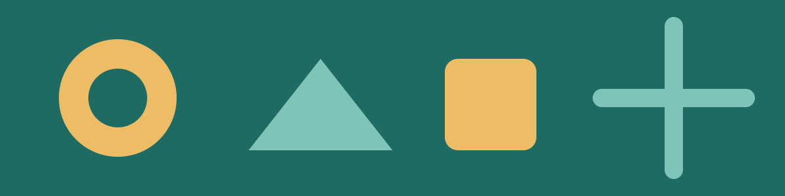

Programi i festivalit
Teleskopi i natës
Astronomi
Detaje
Laboratori i ujit
Kimi
Detaje
Energjia nga dielli
Fizikë
Detaje
Robotët e vegjël
Teknologji
Detaje
Bimët që lëvizin
Biologji
Detaje
Pse qielli është blu gjatë ditës dhe perëndimi i diellit merr ngjyrë portokalli në mbrëmjet e vjeshtës?
Fizikë
Detaje
Detajet
- Teleskopi i natës
- Vëzhgim i Hënës dhe i Saturnit në oborrin e kampusit.
- Laboratori i ujit
- Eksperimente të thjeshta me pastrimin e ujit.
- Energjia nga dielli
- Ndërtojmë një furrë të vogël diellore me karton.
- Robotët e vegjël
- Programojmë një robot që ndjek vijën.
- Bimët që lëvizin
- Si i kthehen bimët dritës: vëzhgim me lupë.
- Pse qielli është blu
- Drita, ngjyrat dhe atmosfera me një prizëm.
Info
Festival i sajuar · Salla imagjinare A · Hyrja falas.